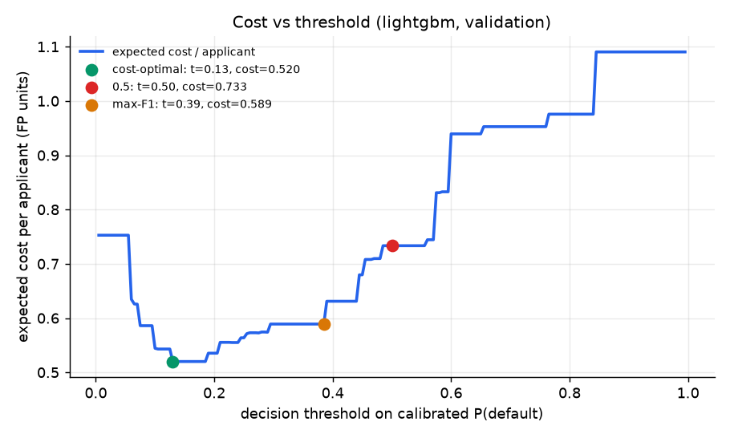
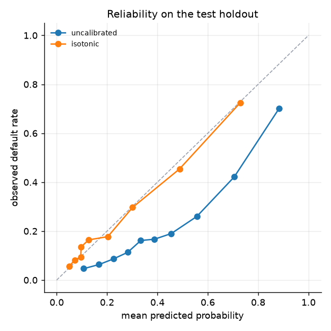
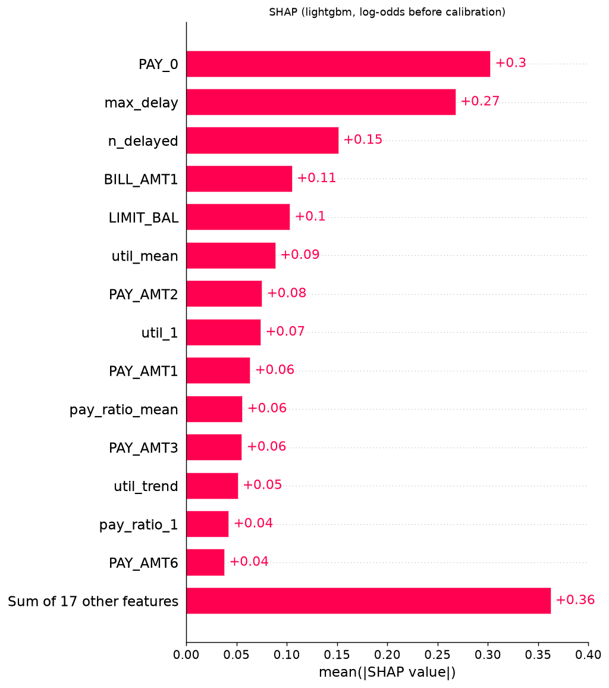
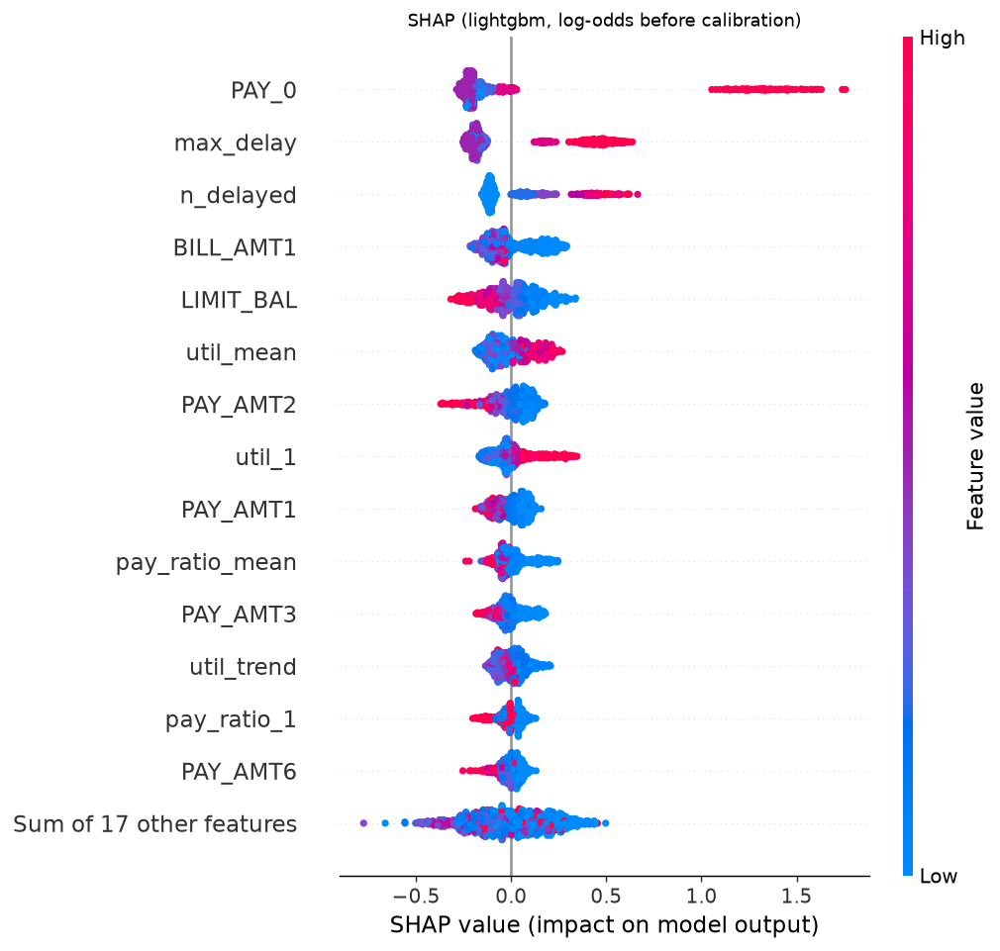
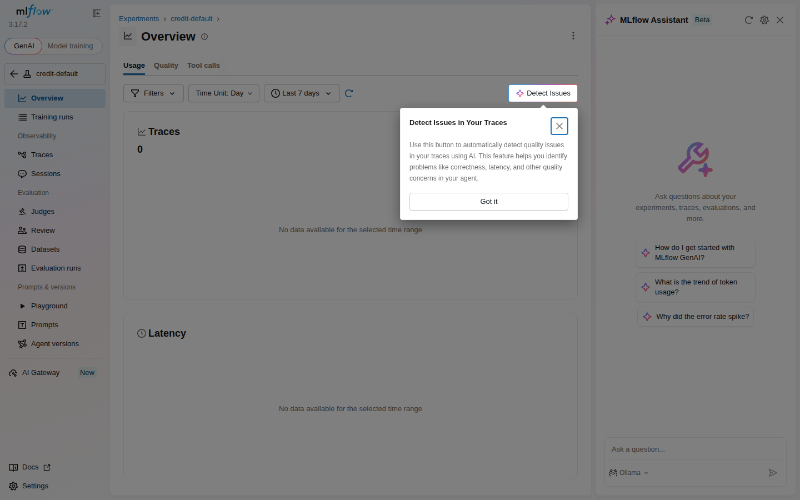

credit-default-mlops
Monitoring and results site, built 2026-11-03 15:30 UTC. Source on GitHub.
Model results (real UCI data)
Training run report
- Data:
uci(30000 rows, default rate 0.221, sha256af6aa9d50511...) - Generated: 2026-11-03T13:40:05Z from commit
d2d766943e - Splits: train 18000 / calibration 3000 / validation 3000 / test 6000
- Costs: FN = 5.0, FP = 1.0 (Bayes threshold for calibrated scores = 0.167)
- Imbalance handling:
class_weight; champion: lightgbm
Test holdout, all families (threshold = each model's cost-optimal threshold from validation)
| Model | CV PR-AUC (train) | ROC-AUC | PR-AUC | F1 | Brier | Cost / applicant | Threshold | Recall | Approval rate | Brier before calibration | Optuna trials |
|---|---|---|---|---|---|---|---|---|---|---|---|
| logreg | 0.5133 | 0.7403 | 0.4782 | 0.4714 | 0.1431 | 0.6012 | 0.1300 | 0.7295 | 0.5367 | 0.1938 | 30 |
| lightgbm | 0.5640 | 0.7781 | 0.5362 | 0.4879 | 0.1353 | 0.5625 | 0.1300 | 0.7664 | 0.5263 | 0.1763 | 30 |
| xgboost | 0.5683 | 0.7799 | 0.5351 | 0.4897 | 0.1358 | 0.5682 | 0.1700 | 0.7468 | 0.5467 | 0.1814 | 30 |
Threshold rules for the champion (test holdout)
| Rule | ROC-AUC | PR-AUC | F1 | Brier | Cost / applicant | Threshold | Recall | Approval rate |
|---|---|---|---|---|---|---|---|---|
| cost-optimal | 0.7781 | 0.5362 | 0.4879 | 0.1353 | 0.5625 | 0.1300 | 0.7664 | 0.5263 |
| 0.5 | 0.7781 | 0.5362 | 0.4582 | 0.1353 | 0.7593 | 0.5000 | 0.3466 | 0.8865 |
| max-F1 | 0.7781 | 0.5362 | 0.5394 | 0.1353 | 0.6192 | 0.3868 | 0.5237 | 0.7917 |
Imbalance ablation (CV PR-AUC on the training split, same hyper-parameters)
| Model | Strategy | CV PR-AUC | Std |
|---|---|---|---|
| logreg | none | 0.5149 | 0.0125 |
| logreg | class_weight | 0.5133 | 0.0115 |
| logreg | smote | 0.5141 | 0.0121 |
| lightgbm | none | 0.5637 | 0.0070 |
| lightgbm | class_weight | 0.5640 | 0.0077 |
| lightgbm | smote | 0.5602 | 0.0040 |
| xgboost | none | 0.5690 | 0.0088 |
| xgboost | class_weight | 0.5683 | 0.0087 |
| xgboost | smote | 0.5532 | 0.0042 |
Figures




Quality gate
Quality gate
Decision: PASS
- no production model: challenger accepted as the first version
Challenger: models:/credit-default@staging (v1)
Production: none
| Metric | Challenger | Production |
|---|---|---|
| pr_auc | 0.5362 | - |
| roc_auc | 0.7781 | - |
| business_cost | 0.5625 | - |
| brier | 0.1353 | - |
| f1 | 0.4879 | - |
| threshold | 0.1300 | - |
Load test
Load test
- Generated: 2026-11-03 13:42 UTC, commit
d2d766943e, workflow run - Setup: Locust headless, 20 users, 60s; GitHub Actions ubuntu-latest runner, API in Docker on the same host
- Latencies in milliseconds, measured client-side
| Endpoint | Requests | Failures | RPS | p50 | p95 | p99 | Max |
|---|---|---|---|---|---|---|---|
POST /explain |
727 | 0 | 12.3 | 70 | 130 | 160 | 217 |
GET /health |
358 | 0 | 6.1 | 22 | 87 | 110 | 136 |
POST /predict |
3757 | 0 | 63.6 | 88 | 170 | 190 | 290 |
POST /predict_batch (20) |
701 | 0 | 11.9 | 100 | 180 | 190 | 285 |
| All | 5543 | 0 | 93.9 | 80 | 170 | 190 | 290 |
MLflow run summary
MLflow run summary
Experiment credit-default, exported after the training run.
| runName | status | start_time | test_pr_auc | test_roc_auc | test_business_cost | test_brier | cv_pr_auc | champion | data_source |
|---|---|---|---|---|---|---|---|---|---|
| xgboost | FINISHED | 2026-11-03 13:39:18.829000+00:00 | 0.5351 | 0.7799 | 0.5682 | 0.1358 | 0.5683 | ||
| lightgbm | FINISHED | 2026-11-03 13:38:37.428000+00:00 | 0.5362 | 0.7781 | 0.5625 | 0.1353 | 0.5640 | ||
| logreg | FINISHED | 2026-11-03 13:38:29.192000+00:00 | 0.4782 | 0.7403 | 0.6012 | 0.1431 | 0.5133 | ||
| train-uci-2026-11-03T13:38:29Z | FINISHED | 2026-11-03 13:38:29.163000+00:00 | 0.5362 | 0.7781 | 0.5625 | 0.1353 | lightgbm | uci |
Registered versions
| Version | Aliases | Run |
|---|---|---|
| 1 | production, staging | b8bfce8214cc4d2bbc9cc79fe1f74d0b |
MLflow UI screenshots

Drift monitoring (Evidently)
The data has no timestamps, so production traffic is simulated from the test split: a control slice left untouched and a drifted slice with documented shifts (credit limits x0.7, ages -6 years, PAY_0 one month worse for 35% of rows, balances x1.25). Reference = training split.
- control slice - 0/24 columns drifted (share 0.00, threshold 0.30): no drift
- drifted slice - 10/24 columns drifted (share 0.42, threshold 0.30): drift